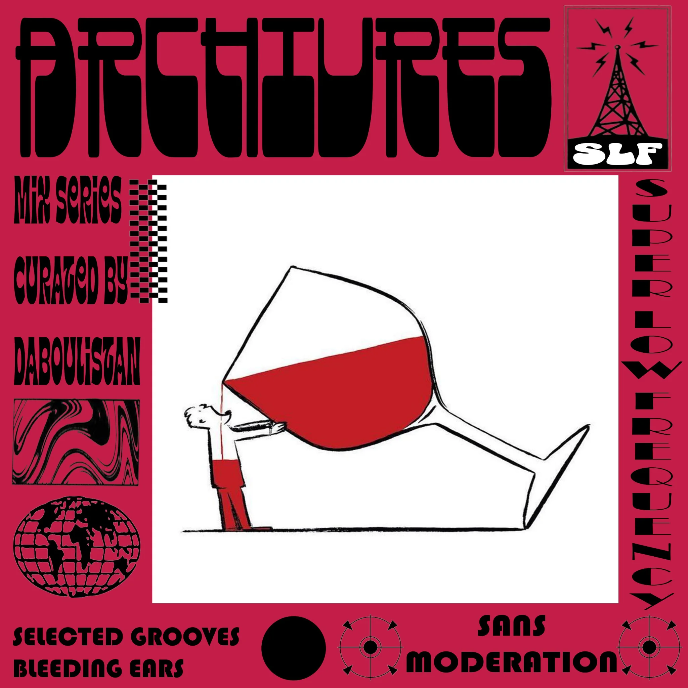

Mixes
Archive 01—06
Radio collages / Lyon — Paris
Collages sonores, sélections musicales et archives personnelles. Musiques, conversations, films et fréquences alternatives.
Archive 01—06
Selections extérieures
ARCHIVRES est une série de collages radiophoniques mêlant sélections musicales, conversations, films et archives sonores. Beaucoup des enregistrements utilisés viennent d'archives personnelles : prises de son, conversations, vinyles, cassettes et fragments accumulés au fil du temps.
Radios, labels, artistes et selectors : pour proposer un mix, une collaboration, une diffusion ou une guest transmission, écrivez directement à ARCHIVRES.
contact.archivres@gmail.com ↗